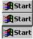
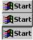

How do i get this as big as a windows 10 start button for windows 10:

| Classic Shell http://www.classicshell.net/forum/ |
|
| Start button size help http://www.classicshell.net/forum/viewtopic.php?f=7&t=8141 |
Page 1 of 1 |
| Author: | affoley09 [ Sat Dec 02, 2017 3:36 pm ] |
| Post subject: | Start button size help |
How do i get this as big as a windows 10 start button for windows 10:  |
|
| Author: | Jcee [ Sat Dec 02, 2017 4:39 pm ] |
| Post subject: | Re: How? |
Open classic shell settings; then check the 'show all settings' button on the top, then look for the start button tab, then adjust the 'button size' field (0 defaults to the size of the image) Try something like 60 to start, and increase/decrease that number till it matches. |
|
| Author: | juniper7 [ Sun Dec 03, 2017 1:51 am ] | |||
| Post subject: | Re: Start button size help | |||
Try these as well for Windows 10 Windows 98 Start buttons, similar to Windows 95. They can be set to " Button size : 0 " so still look pixelated sharp. Only for regular 100%/ 96dpi system size, or will go fuzzy.
|
||||
| Page 1 of 1 | All times are UTC - 8 hours [ DST ] |
| Powered by phpBB® Forum Software © phpBB Group https://www.phpbb.com/ |
|